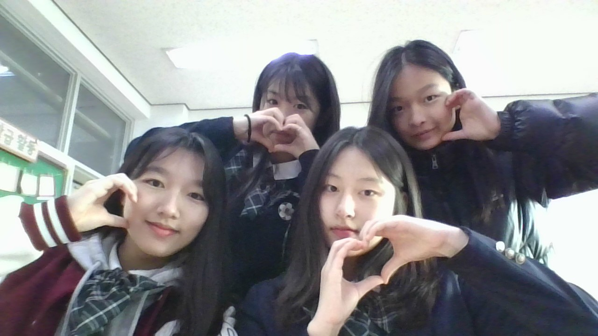

저희는 이공계열의 진로를 가지고 있는 친구들끼리 모여서 만든 팀입니다.
과학이라는 공통의 관심사 속에서 평소에 과학이 우리에게 미치는 영향에는 무엇이 있을지 생각하다가 실생활에서 지속가능한 발전을 위해 무엇을 할 수 있는지,
실생활에서 널리 보편화된 생활이지만 정말 효과가 있는 것인지에 관한 의문점을 가지고 있다는 것을 깨달았습니다.
따라서 이번 실험을 통해 이런 의문점을 해결하고자 ‘카페인이 과제 효율에 미치는 영향’ 과 ‘오호 만들기’ 의 두 주제를 선정하게 되었습니다.